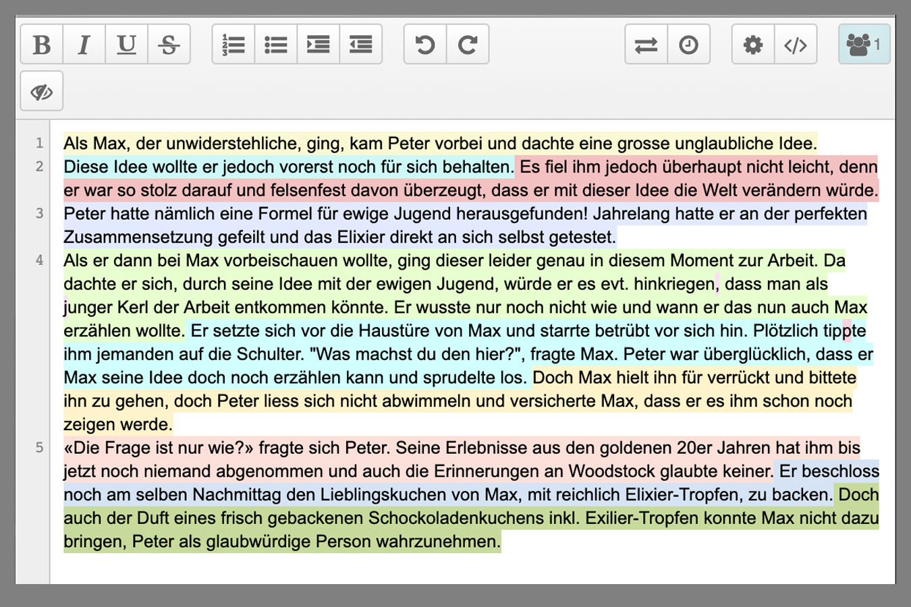

KW 34 / 24.08.19
Vorstellungs-Sequenz: «Was gebe ich preis?»
Wir begannen mit einer etwas ungewöhnlichen, jedoch sehr vergnüglichen Vorstellungsrunde: Jedes Klassenmitglied sollte gut lesbar auf einem Papiersteller eine Besonderheit zu seiner Person in einem oder mehreren Stichworten notieren. Mit diesem Steller setzte sich nun einer nach der anderen vor die Klasse. In Gruppen sollten alle anderen diskutieren und erraten, was diese Besonderheit bei der jeweiligen Person sein könnte. Es wurde angeregt spekuliert und in die Stichworte hinein interpretiert. Man merkte es bereits – dies war bereits eine Form von Storytelling! Die sich daraus ergebenen Erkenntnisse waren spannend und hilfreich zugleich, um sich ein spezifischeres Bild von den neuen Klassenkameraden und -kameradinnen machen zu können.

Mann vor Hütte»
Bild-Textverhältnisse mit Dias zeichnen und Text schreiben.
Danach ging es in kleinen Gruppen an die erste Übung: Wir sollten wir uns durch das Schulhaus bewegen und abwechselnd eine Situation wie mit einer Kamera festhalten und auf eine kleine Folie zeichnen, welche in einem Dia-Rahmen eingefasst war. Im zweiten Teil wurden die Dias in eine Reihenfolge gebracht und mit je einem Satz zu einer Geschichte geformt. Eine weitere Variante der Übung war dann, zur Bilder-Reihe einer anderen Gruppe eine Story zu schreiben. Zum Schluss wurden die Dias an die Leinwand projeziert (ein Flashback-Moment!) und jeweils die originalen sowie die interpretierten Texte dazu vorgetragen. Es zeigte sich, dass eine Handskizze sehr unterschiedlich interpretiert werden kann und dass die Klasse eine Menge Phantasie, Kreativität und Humor hat.


Welche verschiedenen Erzählformen gibt es?
Weiter folgte noch eine PP-Präsentation mit einigen Beispielen verschiedener Erzählformen: von Comics mit Erzählebene Bild ohne Text bis Comic mit praktisch nur Text (sprechende Punkte), sowie eine Link-Session, bei der man mit mehreren Personen synchron live einen Text verfassen, bzw. in unserem Fall eine Geschichte entwickeln kann. Zum Abschluss spielten wir im Plenum noch eine Runde «Veto», ein interaktives Erzählsystem mit Verästelung.
Mann vor Hütte»
KW 36 / 07.09.19
Experimentierfeld: Die Verlockung des Interaktiven
Widerum in kleinen Gruppen bekamen wir die Aufgabe, ein Spiel/Game zu erfinden, welches aus einer skurilen Geschichte eines Zeitungsartikels (5 zur Auswahl) abgeleitet werden soll. Die Ergebnisse wurden anschliessend vor der Klasse präsentiert. Es war erstaunlich, wie viel in so kurzer Zeit möglich ist.

Mann vor Hütte»
Ideenbörse und Projektteams
Nachdem wir im Plenum die Möglichkeiten des Erzählens (Erfahrungen und Vorwissen) zusammengetragen hatten, starteten wir die Ideenbörse für die vorstehende Projektarbeit. Vor der Wand mit den von uns angehefteten Vorstellungen/Visionen/Ideen wurde lebendig diskutiert und es bildeten sich nach und nach die Teams. Schon bald wurden gemeinsame Interessen gefunden und erste Ansätze für ein Projektkonzept gesucht. Als erstes sollten wir eine Absichtserklärung für das Experiment beim bevorstehenden Recherche-Ausflug auf dem Kanzlei-Flohmarkt formulieren.

Mann vor Hütte»
KW 37 / 14.09.19
Generieren einer Experimentellen Erzählung: Recherche-Ausflug
Zu Beginn präsentierte jede Gruppe ihre Pläne für den heutigen Tag der Klasse. Nachdem dann die letzten Details zum Vorhaben in den Projektteams geklärt und in der Absichtserklärung bereinit waren, machte sich die Klasse zusammen auf in Richtung Kanzlei-Areal, um dort angekommen, in den einzelnen Gruppen auszuschwärmen. Die Vielzahl der Marktstände sowie der bereits anwesenden Besucher an diesem sonnigen Morgen überraschte uns zugegebenermassen und bei der einen oder dem anderen kam angesichts des Bevorstehenden etwas Nervosität auf. Doch war der Mut zum ersten Schritt mal überwunden, so kamen die Projektvorhaben ins Rollen. Und wie! Manch ein Team vergass sogar eine Kaffeepause einzulegen, so leidenschaftlich war man bei der Sache.

Mann vor Hütte»

Mann vor Hütte»
KW 38 / 21.09.19
Austausch Recherche-Ausfluges
«Was sind die Ergebnisse aus unserem Experiment? Was hat funktioniert? Warum hat etwas nicht geklappt?» und schliesslich: «Was nehmen wir aus den gewonnen Erkenntnissen mit und wie fahren wir mit den damit in unserem Projekt weiter?» Dies waren die Fragen, die es an diesem Samstag Nachmittag in den jeweiligen Projektteams zu diskutieren gab. Es wurden Pläne geschmiedet, ausprobiert und wieder verworfen. Während die einen Gruppen bereits entscheidungsfreudig auf eine bestimmte Richtung fokussierten, wollten andere sich noch nicht zu früh festlegen und die Findungsphase noch ausnutzen, um vielleicht noch auf spannendere Wege zu gelangen.

KW 39 / 28.09.19
Dramaturgie und experimentelle Erzählformen, Linear und Interaktiv
Als Warm-up an diesem Morgen brachte Lehrer Basil ein paar Spiele mit, welche wir in kleinen Gruppen kurz testen konnten. Zum Beispiel ein Spiel mit vier Bilderwürfeln. Hier konnte man sich die Spielregeln auch einfach selbst erfinden. Als nächste Aufgabe sollten wir auf einem Blatt Papier niederschreiben, was wir bei Erzählungen mögen und was nicht. Die Stichworte wurden wiederum an die Wand geheftet und im Plenum besprochen. Jede/r von uns konnte zu seinen Neigungen bzw. Abneigungen Stellung nehmen. Es war spannend zu sehen, wie unterschiedlich die Meinungen bei einigen Punkten waren, zum Beispiel zum Stichwort «Happy End»


Es folgte ein Theorieblock, in welchem wir im Frontalunterricht in die Dramaturgie eingeführt wurden. Basil zeigte auf, wie dramatische, epische und weitere Erzählformen wie Episoden oder Ensemblegeschichten aufgebaut sind. Bei den Elementen eines Plots kamen wir auch auf die Spannung oder Überraschung zu sprechen. Hierzu hatte Alfred Hitchcock eine klare Haltung.

KW 40 / 05.10.19
Helden
Am heutigen Tag sollte es wieder vergnüglich zu und hergehen. Wir bekamen in kleinen Gruppen die Aufgabe, einen Helden zu kreieren; zuerst durch die schriftliche Definition zu einer vorgegebenen Fragestellung, danach als visuelle Darstellung in Form einer Handzeichnung. Nun wurde jeweils die Zeichnung und die Beschreibung des geschaffenen Helden getrennt voneinander je einer anderen Gruppe weitergegeben. Von einer Gruppe erhielt man je eine Zeichnung (zu der es eine entsprechende Beschreibung zu erstellen galt), von einer anderen Gruppe eine Beschreibung, welche man wiederum zeichnerisch zum Leben erwecken sollte. Im Plenum wurden schliesslich die Arbeiten amüsiert bewundert. Auch hier zeigte sich wieder, wie offen Zeichungen interpretiert werden können. Im weiteren Verlauf des Vormittags hatten wir die Gelegenheit, um in den Teams weiter an unseren Projektarbeiten zu feilen.


KW 43 / 26.10.19
Storyboard
Zum lockeren Einstieg gab es eine kleine Aufmerksamkeitsübung bzw. ein Experiment: «Zähle, wie oft der Basketball weitergegeben wird!» Basil wollte mit diesem Beispiel auch aufzeigen, dass sich beim Filme machen oft mit Details beschäftigt, welche der Zuschauer dann nicht einmal wahr nimmt. Weiter schauten wir uns verschiedene Arten und Stile von Umsetzungen für Storyboards und danach jeweils die entsprechende Filmsequenz an. Schliesslich kamen wir auch auf den Bildausschnitt und die Kameraeinstellungen oder -bewegungen zu sprechen.


KW 44 / 02.11.19
Schlussspurt
An diesem Morgen konnten wir uns in den Projektgruppen intensiv auf auf die bevorstehende Präsentation vorbereiten. Wir erstellten einen Ablauf und koordinierten wer welche Teile der Klasse referieren wird.


KW 45 / 09.11.19
Präsentation
(ändern!)Am heutigen Tag sollte es wieder vergnüglich zu und hergehen. Wir bekamen in kleinen Gruppen die Aufgabe, einen Helden zu kreieren; zuerst durch die schriftliche Definition zu einer vorgegebenen Fragestellung, danach als visuelle Darstellung in Form einer Handzeichnung. Nun wurde jeweils die Zeichnung und die Beschreibung des geschaffenen Helden getrennt voneinander je einer anderen Gruppe weitergegeben. Von einer Gruppe erhielt man je eine Zeichnung (zu der es eine entsprechende Beschreibung zu erstellen galt), von einer anderen Gruppe eine Beschreibung, welche man wiederum zeichnerisch zum Leben erwecken sollte. Im Plenum wurden schliesslich die Arbeiten amüsiert bewundert. Auch hier zeigte sich wieder, wie offen Zeichungen interpretiert werden können. Im weiteren Verlauf des Vormittags hatten wir die Gelegenheit, um in den Teams weiter an unseren Projektarbeiten zu feilen.